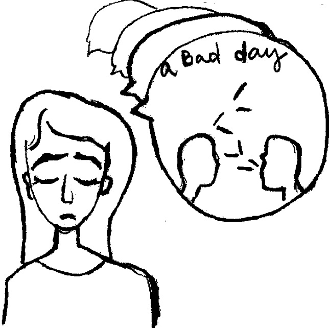
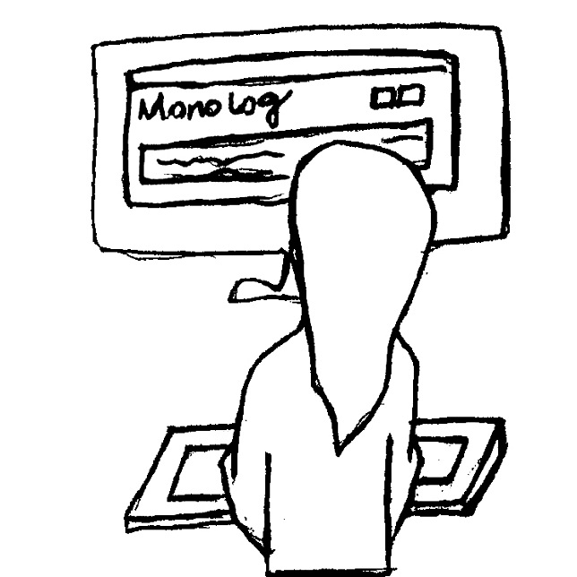
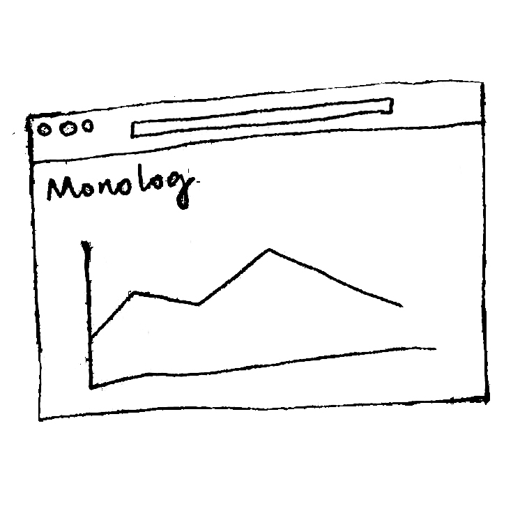
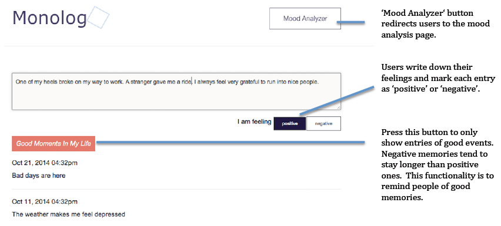
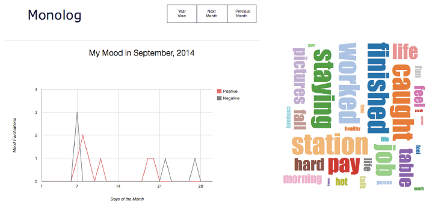

Motivation
During my two year career as a mental health social worker, I found people in need of clinical services often reported a lack of support outside of counseling sessions. Inspired by Dr. James Pennebaker's Writing to Heal (2004), I created Monolog to offer support for people with mood disorders. Monolog gives people a private place to write about their emotionally challenging experiences and keep track of their emotional upheavals. Expressive writing facilitates healing.
Storyboard

Carol suffers from depression. She is haunted by negative thoughts.

Carol sets 15-20min aside to write about her emotions on Monolog.
Monolog displays positive events happened to Carol's life to remind her of good things when she concentrates too much about negative things.

Carol uses the mood chart to track her emotion upheavels.
Carol suffers from depression. She is haunted by negative thoughts.
Carol sets 15-20min aside to write about her emotions on Monolog.
Monolog displays positive events happened to Carol's life to remind her of good things when she concentrates too much about negative things.
Carol uses the mood chart to track her emotion upheavels.
Mood Recording Page
Input Box: Users can write about their feelings in the box. After they finish writing, they can click either the 'positive' or 'negative' button to record their feelings associated with this entry.
Entry List: Users can view all of their entries, with the latest on top.
Good Moments Button: Users can click this button to view only the good memories in their lives. Sometimes, people immerse themselves in the bad experiences. This function is designed to remind them of good memories.

Mood Analysis Page
Mood Graph: This graph shows the number of positive and negative entries in the current month. Users can navigate to the previous or following month as well as see an annual graph.
Word Cloud: The word cloud shows high frequency words in entries. Users are encouraged to talk more about positive experiences to make a 'positive' word cloud.
